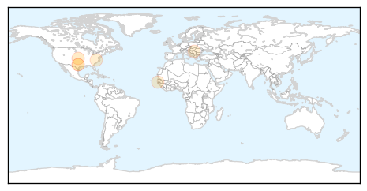
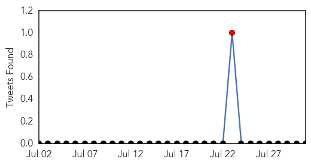
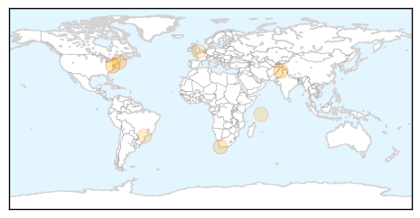

Pertussis
30-Day Web Trend
0 alerts, 0 warnings

30-Day Twitter Trend
0 alerts, 0 warnings

Article Locations
Article Confidences

Top Articles:
- 0.974
- 'Leaky' Vaccines May Fuel Evolution of Deadlier Viruses
- 0.659
- Reno County’s Relentless Whooping Cough Outbreak And FDA’s Tod Merkel’s Advice In Light Of New Findings
- 0.569
- Whooping cough alert: Bathurst parents left to fend for themselves
- 0.564
- CDC says 40% of teen girls are skipping recommended HPV vaccines
- 0.505
- New law requires chicken pox, pertussis vaccine for students
Top Tweets:
-
No tweets found for Jul 31, 2015
Hepatitis
30-Day Web Trend
4 alerts, 3 warnings

30-Day Twitter Trend
1 alerts, 0 warnings

Article Locations
Article Confidences

Top Articles:
- 0.900
- Awareness, legislation to check hepatitis stressed
- 0.888
- Hepatitis on the prowl in Nigeria
- 0.845
- Health Dept. cites protection offered by HPV immunization
- 0.721
- Hepatitis B vaccine at birth can save lives
- 0.614
- Olympic athletes will most likely swim, boat in poop water next summer
- 0.598
- Nation Home
- 0.514
- Gay ignorance about Hep B worries charity · PinkNews
Top Tweets:
-
No tweets found for Jul 31, 2015